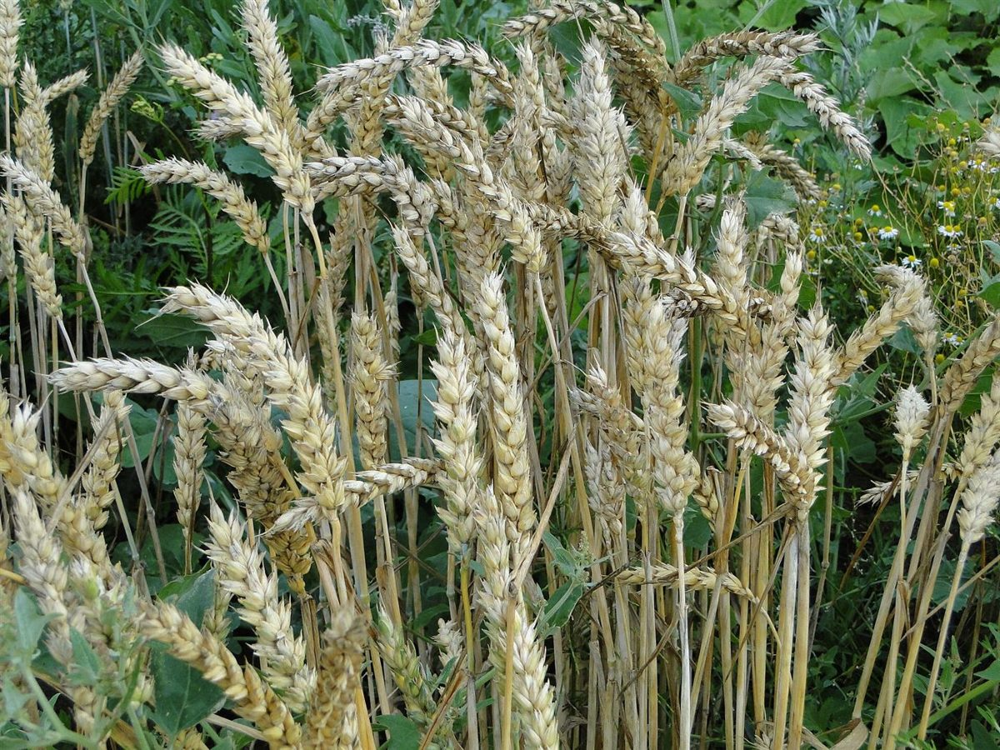

パン屋 / 三重県松阪市川井町
ブレッドカメイドー
温度28℃
湿度75%
三重県松阪市川井町のパン屋「ブレッドカメイドー」のご案内ページです。営業時間やメニューなど、詳しいことは準備中です。まずはInstagramをのぞいてみてください。

制作側の連想
パンがふくらむ部屋の、温度計と湿度計
これは制作側の連想で、お店の理念・由来とは無関係です。屋号の由来は分かりません。パンの生地がふくらむ発酵室には、温度計と湿度計が並んでいるもの、というところから、このサイトでは「温度」と「湿度」の二連ゲージを各ページに置きました。ゲージの数値はすべて飾りの例で、お店の設備や作り方を示すものではありません。
五つの目盛り(イメージ)
麦から粗熱まで、ゲージの針をずらして見る。
写真はお店のものではなく、国外または撮影地不明のフリー素材です。数値は制作側の例です。
- 01

撮影地不明のイメージ 麦の穂18℃ / 55% - 02

撮影地不明のイメージ 粉20℃ / 60% - 03

撮影地不明のイメージ 生地がふくらむ28℃ / 75% - 04

撮影地不明のイメージ 窯の前40℃ / 45% - 05

撮影地不明のイメージ 粗熱をとる24℃ / 60%
ご案内
お店のこと(確認できたものだけ)
| 所在地 | 〒515-0818 三重県松阪市川井町828-7 |
|---|---|
| 電話 | 0598-21-1608 |
| 営業時間 | 準備中 |
| 定休日 | 準備中 |
| ご予約 | 準備中 |
| 駐車場 | 準備中 |
| SNS | Instagram @bread_kameido |